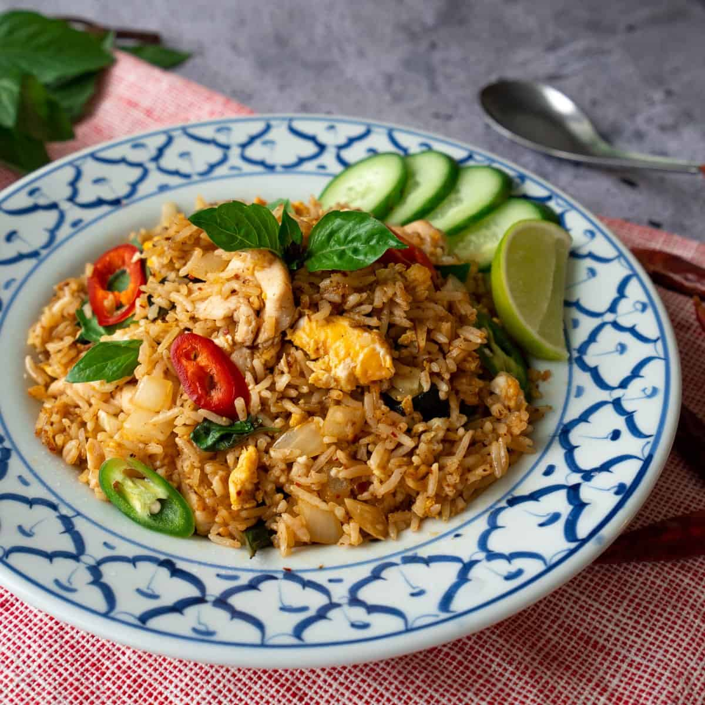

Basil Fried Rice

Description
Basil Fried Rice is a flavorful Thai-inspired dish featuring fragrant jasmine rice, fresh basil, and a variety of vegetables, often with the addition of protein like chicken, shrimp, or tofu. This dish is stir-fried with garlic, onions, and Thai chili for a balance of heat and flavor, then seasoned with soy sauce and fish sauce for a savory, slightly sweet taste.
The dish is easy to make and perfect for a quick meal. The addition of basil adds a unique aroma and pairs perfectly with the sauce and rice, creating a delicious and satisfying meal.
Ingredients
- For the Fried Rice:
- 2 cups cooked jasmine rice (day-old, chilled)
- 2 tablespoons vegetable oil
- 3 cloves garlic (minced)
- 1 small onion (chopped)
- 1 bell pepper (chopped)
- 1 cup protein (chicken, shrimp, or tofu)
- 2 eggs (optional)
- 1 cup fresh basil leaves
- For the Sauce:
- 2 tablespoons soy sauce
- 1 tablespoon fish sauce
- 1 teaspoon sugar
- 1-2 Thai chilies (sliced, optional for heat)
- Optional for Garnish:
- Sliced green onions
- Fresh basil leaves
- Lime wedges
Steps
- Step 1: Prepare Ingredients
- Chop all vegetables and protein.
- Have the rice cooked and chilled if possible (day-old rice works best).
- Step 2: Make the Sauce
- In a small bowl, mix together soy sauce, fish sauce, sugar, and sliced Thai chilies (if using). Set aside.
- Step 3: Sauté Garlic and Onion
- Heat the oil in a large skillet or wok over medium-high heat.
- Add the minced garlic and chopped onion, and sauté until fragrant.
- Step 4: Add Protein and Vegetables
- Add your choice of protein (chicken, shrimp, or tofu) and cook until done.
- Add the bell pepper and cook for another 1-2 minutes.
- Step 5: Add Rice and Sauce
- Push everything to one side of the pan, then add a bit more oil to the empty side.
- Crack the eggs into the pan (if using) and scramble them briefly.
- Add the rice and pour the sauce over everything. Stir-fry to combine and heat through.
- Step 6: Add Basil
- Turn off the heat and add the fresh basil leaves. Stir until the basil is just wilted.
- Step 7: Serve
- Garnish with green onions, more basil, and lime wedges if desired.
- Serve hot and enjoy!